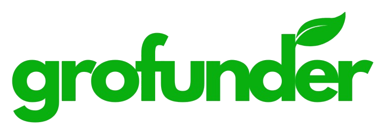

The GroFunder prototype
A clickable mockup of the GroFunder app, drawn with the React Native kit's components and GroFunder's colours, then converted into the Expo app. It is local only. The plan and decisions live next to it in mockups/.
Where it stands
1Brand and colour: logo, palette, Figtree, number formatsSigned off
2Components and shell, pattern samples, new-component proposalsSigned off
3Screen map and the shared fictional dataSigned off
4GroFunder onboards a cooperative: the consoleSigned off
5Cooperative set-up: the portalFor review
9Member appFor review
Map
Sitemap: every screen, by surface and role68 screens from notes 01–09, who can open each one, and the flow that draws it.Specimens
Pattern samples, in the shell
Sample screens that test the shell and the components on real kinds of screen. Their content is provisional: each flow redesigns its screens from the app notes. Use the review bar at the top of each page to switch role, cooperative status, theme and state; its Notes button explains the page.
Cooperative portalWeb, for cooperative staff. Bottom bar on a phone (clerks), rail on a computer.
Member appAndroid and iOS, for members.
How to read it
- Review bar
- The dark bar at the top is the prototype's, not the app's. Press H to hide it.
- Role
- Switches what the role can see; content a role can't use is removed, not greyed out (note 09).
- Cooperative
- Active or on hold: what changes while a cooperative is on hold (note 01).
- State
- Every screen's loading, empty, error and loaded states; flows show their steps here.
- Notes
- Why the screen is the way it is. A red count is gaps: things the design needs that don't exist yet.
- Widths
- Narrow the window: under 600 is a phone (bottom bar), 600 to 1199 a rail, 1200 and up an expanded rail.